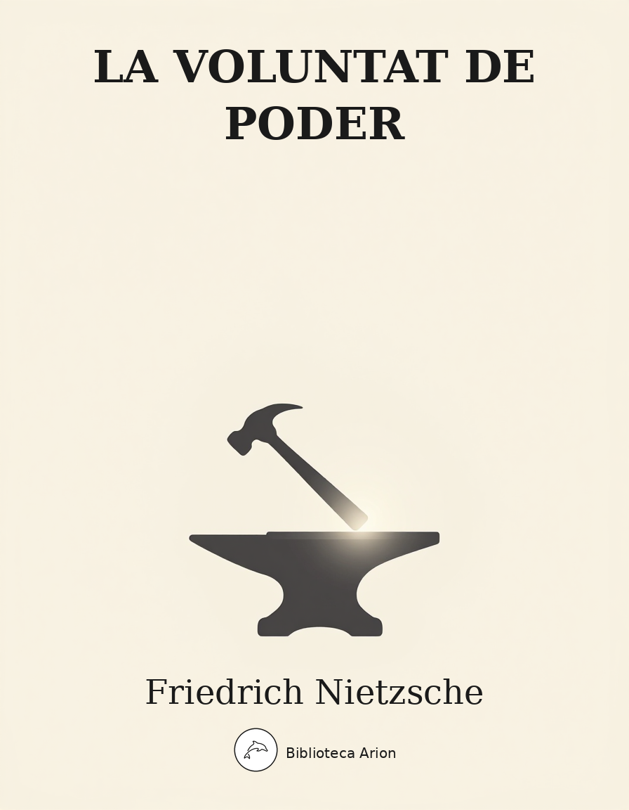

EPUBLa voluntat de poder
Der Wille zur Macht
Recull pòstum d'apunts filosòfics de Friedrich Nietzsche, compilat i organitzat per Elisabeth Förster-Nietzsche i Peter Gast a partir dels quaderns del filòsof (1883–1888). L'obra s'estructura en quatre llibres: I. El nihilisme europeu, II. Crítica dels valors suprems, III. Principi d'una nova valoració, IV. Disciplina i criança. Tot i la polèmica sobre la legitimitat editorial de la compilació, conté algunes de les formulacions més potents de Nietzsche sobre la voluntat de poder, l'etern retorn, la transvaloració dels valors i la crítica de la moral, la religió i la filosofia tradicionals. Selecció de 50 aforismes representatius dels quatre llibres.
Der Wille zur Macht — Friedrich Nietzsche
Versuch einer Umwerthung aller Werthe
Aus dem Nachlass zusammengestellt. Aphorismen (1883–1888).
Edició de referència: Der Wille zur Macht, Kröner Verlag, Leipzig 1906 (ed. ampliada). Numeració segons l’edició estàndard.
Erstes Buch: Der europäische Nihilismus
§ 1
Was bedeutet Nihilismus? — Dass die obersten Werthe sich entwerthen. Es fehlt das Ziel; es fehlt die Antwort auf das «Warum?»
§ 2
Die ganze Schönheit und Erhabenheit, die wir den wirklichen und eingebildeten Dingen geliehen haben, will ich zurückfordern als Eigenthum und Erzeugnis des Menschen: als seine schönste Apologie. Der Mensch als Dichter, als Denker, als Gott, als Liebe, als Macht —: oh über seine königliche Freigebigkeit, mit der er die Dinge beschenkt hat, um sich zu verarmen und sich elend zu fühlen! Das war bisher seine grösste Selbstlosigkeit, dass er bewunderte und anbetete und sich zu verbergen wusste, dass er es war, der das geschaffen hat, was er bewunderte.
§ 4
Der Nihilismus steht vor der Thür: woher kommt uns dieser unheimlichste aller Gäste?
§ 12
Der Nihilismus als normaler Zustand.
Nihilismus: es fehlt das Ziel; es fehlt die Antwort auf das «Warum?» Was bedeutet Nihilismus? — dass die obersten Werthe sich entwerthen.
Er ist mehrdeutig:
A. Nihilismus als Zeichen der gesteigerten Macht des Geistes: als aktiver Nihilismus.
B. Nihilismus als Niedergang und Rückgang der Macht des Geistes: der passive Nihilismus.
§ 13
Der Nihilismus, ein normaler Zustand. Er kann ein Zeichen der Stärke sein: die Kraft des Geistes kann so gewachsen sein, dass die bisherigen Ziele («Überzeugungen», Glaubensartikel) ihm unangemessen sind. Ein Glaube nämlich drückt im Allgemeinen den Zwang der Existenzbedingungen aus, eine Unterwerfung unter die Autorität von Verhältnissen, unter denen ein Wesen gedeiht, wächst, Macht gewinnt…
§ 15
Was ist der Glaube? Wie entsteht er? Jeder Glaube ist ein Für-wahr-halten.
Die extremste Form des Nihilismus wäre: dass jeder Glaube, jedes Für-wahr-halten nothwendig falsch ist: weil es eine wahre Welt gar nicht giebt.
§ 22
Der Nihilismus ist nicht nur eine Betrachtung über das «Umsonst!», nicht nur der Glaube, dass Alles werth ist, zu Grunde zu gehen: man legt Hand an, man richtet zu Grunde… Das ist, wenn man will, unlogisch: aber der Nihilist glaubt nicht an die Nöthigung, logisch zu sein…
§ 55
Die Heraufkunft des Nihilismus. — Man hat eine ganze Weile nöthig, um zu begreifen, dass man nicht weiss, wo man steht. — Dass es keinen Mittelpunkt giebt, keinen Zweck. — Die Moral war ein solcher Mittelpunkt: aber sie hat sich selbst aufgelöst.
Zweites Buch: Kritik der bisherigen höchsten Werthe
I. Kritik der Religion
§ 132
Der christliche Gottesbegriff — Gott als Krankengott, Gott als Spinne, Gott als Geist — ist einer der corruptesten Gottesbegriffe, die auf Erden erreicht worden sind; er stellt vielleicht selbst den Pegel des Tiefstands in der absteigenden Entwicklung des Götter-Typus dar. Gott zum Widerspruch des Lebens abgeartet, statt dessen Verklärung und ewiges Ja zu sein!
§ 141
Gegen das Wort «Gott» rede ich, nicht gegen die Sache. Was ist daran gelegen, ob es einen Gott giebt? Was daran gelegen, ob es bewiesen oder unbewiesen ist? — Gerade die Frommen empfinden es so: «Was daran gelegen!» sagen sie.
§ 147
Die Entdeckung der christlichen Moral ist ein Ereigniss, das seinesgleichen nicht hat, eine wirkliche Katastrophe. Wer darüber aufklärt, ist eine force majeure, ein Schicksal, — er bricht die Geschichte der Menschheit in zwei Stücke. Man lebt vor ihm, man lebt nach ihm…
§ 152
Der Buddhismus hat den Vortheil, dass er nicht «Kampf gegen die Sünde» sagt, sondern, dem Wirklichen sein Recht gebend, «Kampf gegen das Leiden». Er hat die Selbstbetrügerei der Moralbegriffe bereits hinter sich, — er steht, in meiner Sprache geredet, jenseits von Gut und Böse.
II. Kritik der Moral
§ 253
Moral als Décadence. — Es giebt nichts Thatsächliches, nichts Wirkliches an der Moral: sie gehört ganz und gar in die Welt der Vorstellungen. «Moralische Urtheile» sind Eins mit den religiösen und metaphysischen Einbildungen.
§ 258
Man soll den Muth seiner Triebe haben. Die schwächsten und ängstlichsten Menschen sind es, welche die Moral am stärksten im Munde führen.
§ 260
Die Moral als Circe der Philosophen. — Die Philosophen sind nicht redlich genug in ihrer Arbeit gewesen: sie thaten allesamt, als ob sie ihre eigentlichen Meinungen durch die Selbstentwicklung einer kalten, reinen, göttlich unbekümmerten Dialektik entdeckt und erreicht hätten: während im Grunde ein vorweggenommener Satz, ein Einfall, eine «Eingebung», zumeist ein abstractgemachter und durchgesiebter Herzenswunsch von ihnen mit nachgesuchten Gründen vertheidigt wurde.
§ 275
Moral als Widernatur. — Gegen die Affekte. — Alle alten Moral-Ungeheuer sind einstimmig darin: «il faut tuer les passions». Die berühmteste Formel dafür steht im neuen Testament, in jener Bergpredigt, wo, anbei gesagt, die Dinge durchaus nicht aus der Höhe betrachtet werden. Da wird zum Beispiel mit Nutzanwendung auf die Geschlechtlichkeit gesagt «wenn dich dein Auge ärgert, so reisse es aus»: zum Glück handelt kein Christ nach dieser Vorschrift.
§ 285
Moral für Ärzte. — Der Kranke ist ein Parasit der Gesellschaft. In einem gewissen Zustande ist es unanständig, noch länger zu leben. Das Fortvegetiren in feiger Abhängigkeit von Ärzten und Praktiken, nachdem der Sinn des Lebens, das Recht zum Leben verloren gegangen ist, sollte bei der Gesellschaft eine tiefe Verachtung nach sich ziehen.
III. Kritik der Philosophie
§ 407
Der Glaube an die «unmittelbare Gewissheit des Denkens» ist ein Glaube mehr, nicht eine Gewissheit. Das Denken, wie es die Erkenntnisstheoretiker ansetzen, kommt gar nicht vor: das ist eine ganz willkürliche Fiktion, erreicht durch Herausschneidung eines Elementes aus dem Process und Subtraktion aller übrigen.
§ 411
Gegen den Positivismus, welcher bei dem Phänomen stehen bleibt «es giebt nur Thatsachen», würde ich sagen: nein, gerade Thatsachen giebt es nicht, nur Interpretationen. Wir können kein Factum «an sich» feststellen: vielleicht ist es ein Unsinn, so etwas zu wollen.
«Alles ist subjektiv», sagt ihr; aber schon das ist Auslegung. Das «Subjekt» ist nichts Gegebenes, sondern etwas Hinzu-Erdichtetes, Dahinter-Gestecktes. — Ist es zuletzt nöthig, den Interpreten noch hinter die Interpretation zu setzen? Schon das ist Dichtung, Hypothese.
§ 416
Soweit das Wort «Erkenntniss» Sinn hat, ist die Welt erkennbar: aber sie ist anders deutbar, sie hat keinen Sinn hinter sich, sondern unzählige Sinne. — «Perspektivismus.»
§ 428
Thatsachen giebt es nicht, nur Interpretationen. — Der «Schein» selbst gehört zur Realität: er ist eine Form ihres Seins.
§ 466
Das Sein — wir haben keine andere Vorstellung davon als «leben». — Wie kann also etwas Todtes «sein»?
Drittes Buch: Prinzip einer neuen Werthsetzung
I. Der Wille zur Macht als Erkenntniss
§ 480
Dem Werden den Charakter des Seins aufzuprägen — das ist der höchste Wille zur Macht.
§ 481
Dass Alles wiederkehrt, ist die extremste Annäherung einer Welt des Werdens an die des Seins: — Gipfel der Betrachtung.
§ 493
Nicht «erkennen», sondern schematisiren, — dem Chaos so viel Regularität und Formen auferlegen, als es unserm praktischen Bedürfniss genug thut.
§ 495
Unser Erkenntniss-Apparat ist nicht auf «Erkenntniss» eingerichtet.
§ 517
In einer Welt, welche wesentlich falsch ist, wäre Wahrhaftigkeit eine naturwidrige Tendenz: eine solche könnte einzig als Mittel zu einer besonderen höheren Potenz der Falschheit einen Sinn haben.
II. Der Wille zur Macht in der Natur
§ 619
Der Wille zur Macht kann sich nur an Widerständen äussern; er sucht nach dem, was ihm widersteht.
§ 623
Wille zur Macht ist das letzte Factum, zu dem wir hinunterkommen.
§ 625
Meine Idee ist, dass jeder specifische Körper darnach strebt, über den ganzen Raum Herr zu werden und seine Kraft auszudehnen (— sein Wille zur Macht —) und Alles zurückzustossen, was seiner Ausdehnung widerstrebt. Aber er stösst fortwährend auf gleiche Bestrebungen anderer Körper und endet, sich mit denen zu arrangiren («vereinigen»), welche ihm verwandt genug sind: — so conspiriren sie dann zusammen zur Macht.
§ 634
Der Mensch ist nicht die Krone der Schöpfung: jedes Wesen steht neben ihm auf der gleichen Stufe der Vollkommenheit.
§ 636
Gegen den «Humanismus»: der Mensch ist nicht die «Krone der Schöpfung» —. Die Werthe, die wir in die Dinge gelegt haben — wir ziehen sie wieder heraus.
III. Der Wille zur Macht als Kunst
§ 794
Unsere Religion, Moral und Philosophie sind Décadence-Formen des Menschen.
Die Gegenbewegung: die Kunst.
§ 797
Die Kunst und nichts als die Kunst! Sie ist die grosse Ermöglicherin des Lebens, die grosse Verführerin zum Leben, das grosse Stimulans des Lebens.
§ 800
Die Kunst als der eigentliche Wille zum Gegentheil, als anti-christlich, anti-buddhistisch, anti-nihilistisch par excellence.
§ 804
Das Wesentliche an der Kunst bleibt ihre Daseins-Vollendung, ihr Erzeugen von Vollkommenheit und Fülle; Kunst ist wesentlich Bejahung, Segnung, Vergöttlichung des Daseins…
§ 808
Die tragische Kunst. — Die Bejahung des Lebens selbst noch in seinen fremdesten und härtesten Problemen; der Wille zum Leben, im Opfer seiner höchsten Typen der eigenen Unerschöpflichkeit sich freuend — das nannte ich dionysisch, das errieth ich als die Brücke zur Psychologie des tragischen Dichters.
§ 821
Der grosse Stil. — Grosser Stil entsteht, wenn das Schöne den Sieg über das Ungeheure davonträgt.
Viertes Buch: Zucht und Züchtung
§ 854
Um was es sich handelt: — um die Zucht der starken Menschen, welche die Geschichte in die Hand nehmen und die Geschichte des Menschen in die Hand nehmen.
§ 862
Ich unterscheide einen Typus des aufsteigenden Lebens und einen anderen des Verfalls, der Zersetzung, der Schwäche.
§ 866
Der Starke. — Der starke Mensch, mächtig in den Instinkten einer starken Gesundheit, verdaut seine Thaten ebensogut wie seine Mahlzeiten; er wird auch mit schwerer Kost fertig: in der Hauptsache aber wird er von einem unverletzten und strengen Instinkt geleitet, dass er nichts thut, was ihm widerstrebt, ebenso wie er nichts isst, was ihm nicht schmeckt.
§ 870
Die Vornehmen. — Vornehm ist, wer sich selber Ehrfurcht erweist. Alle Tugend und Tüchtigkeit des Leibes und der Seele mühsam und Stück für Stück erworben, durch viel Fleiss, Selbstzucht, Beschränkung auf Weniges — die Vornehmheit will immer nur Eines.
§ 881
Der Mensch, der das Schicksal liebt. — Die Formel für die Grösse am Menschen ist amor fati: dass man Nichts anders haben will, vorwärts nicht, rückwärts nicht, in alle Ewigkeit nicht. Das Nothwendige nicht bloss ertragen, noch weniger verhehlen — aller Idealismus ist Verlogenheit vor dem Nothwendigen —, sondern es lieben…
§ 898
Ob nicht auch die «Nützlichkeit» nur ein Mittel ist, um die schöpferischen Kräfte zu steigern? In der That, es könnte sein, dass die höchste Macht gerade nicht in der Macht über Andere liegt, sondern in der Macht über sich selbst.
§ 910
Dieser Mensch der Zukunft, der uns ebenso vom bisherigen Ideal erlösen wird als von dem, was aus ihm wachsen musste, vom grossen Ekel, vom Willen zum Nichts, vom Nihilismus, dieser Glockenschlag des Mittags und der grossen Entscheidung, der den Willen wieder frei macht, der der Erde ihr Ziel und dem Menschen seine Hoffnung zurückgiebt, dieser Antichrist und Antinihilist, dieser Besieger Gottes und des Nichts — er muss einst kommen…
§ 972
Recapitulation. — Die höchsten Werthe, in deren Dienst der Mensch leben sollte, namentlich wenn sie sehr kostspielig und theuer über ihn verfügten — diese sozialen Werthe wurden, zu ihrer Steigerung, über dem Menschen aufgebaut, als ob sie Befehle Gottes wären, als «Realität», als «wahre» Welt, als Hoffnung und zukünftige Welt. Jetzt, da die niedrige Herkunft dieser Werthe klar wird, scheint uns das Universum entwerthet, «sinnlos» geworden — aber das ist nur ein Übergangsstadium.
§ 1041
Die zwei extremsten Denkweisen — die mechanistische und die platonische — kommen überein in der ewigen Wiederkunft: beide als Ideale.
§ 1052
Und wisst ihr auch, was mir «die Welt» ist? Soll ich sie euch in meinem Spiegel zeigen? Diese Welt: ein Ungeheures von Kraft, ohne Anfang, ohne Ende, eine feste, eherne Grösse von Kraft, welche nicht grösser, nicht kleiner wird, die sich nicht verbraucht, sondern nur verwandelt… ein Meer in sich selber stürmender und fluthender Kräfte, ewig sich wandelnd, ewig zurücklaufend, mit ungeheuren Jahren der Wiederkehr… — Diese Welt ist der Wille zur Macht — und nichts ausserdem! Und auch ihr selber seid dieser Wille zur Macht — und nichts ausserdem!
§ 1067
Diese Welt ist der Wille zur Macht — und nichts ausserdem! Und auch ihr selber seid dieser Wille zur Macht — und nichts ausserdem!
[Darrer aforisme del recull]
Llibre primer: El nihilisme europeu
§ 1
Què significa nihilisme? — Que els valors suprems es desvaloren. Manca la finalitat; manca la resposta al «Per què?»
§ 2
Tota la bellesa i sublimitat que hem prestat a les coses reals i imaginàries, la vull reclamar com a propietat i producte de l’home: com la seva apologia més bella. L’home com a poeta, com a pensador, com a déu, com a amor, com a poder —: oh, quina reial generositat amb la qual ha obsequiat les coses per empobrir-se ell mateix i sentir-se miserable! Aquesta ha estat fins ara la seva abnegació més gran: que admirava i adorava i sabia ocultar-se que era ell qui havia creat allò que admirava.
§ 4
El nihilisme és a la porta: d’on ens ve aquest hoste, el més inquietant de tots?
§ 12
El nihilisme com a estat normal.
Nihilisme: manca la finalitat; manca la resposta al «Per què?» Què significa nihilisme? — Que els valors suprems es desvaloren.
És ambigu:
A. Nihilisme com a signe de la potència creixent de l’esperit: com a nihilisme actiu.
B. Nihilisme com a declivi i regressió de la potència de l’esperit: el nihilisme passiu.
§ 13
El nihilisme, un estat normal. Pot ser un signe de fortalesa: la força de l’esperit pot haver crescut tant que les finalitats anteriors («conviccions», articles de fe) li resulten inadequades. Una creença, en efecte, expressa generalment la coerció de les condicions d’existència, una submissió a l’autoritat de les circumstàncies sota les quals un ésser prospera, creix, guanya poder…
§ 15
Què és la creença? Com neix? Tota creença és un tenir-per-vertader.
La forma més extrema del nihilisme seria: que tota creença, tot tenir-per-vertader és necessàriament fals: perquè un món vertader no existeix en absolut.
§ 22
El nihilisme no és només una contemplació de l’«En va!», no és només la creença que tot mereix anar a fons: s’hi posa la mà, s’hi destrueix… Això és, si es vol, il·lògic: però el nihilista no creu en l’obligació de ser lògic…
§ 55
L’adveniment del nihilisme. — Es necessita força temps per comprendre que no se sap on s’està. — Que no hi ha cap centre, cap finalitat. — La moral era un centre d’aquesta mena: però s’ha dissolt ella mateixa.
Llibre segon: Crítica dels valors suprems vigents fins ara
I. Crítica de la religió
§ 132
El concepte cristià de Déu — Déu com a déu dels malalts, Déu com a aranya, Déu com a esperit — és un dels conceptes de Déu més corruptes que s’han assolit mai a la terra; representa potser el nivell més baix en l’evolució descendent del tipus diví. Déu degenerat fins a ser la contradicció de la vida, en lloc de ser-ne la transfiguració i l’etern Sí!
§ 141
Parlo contra la paraula «Déu», no contra la cosa. Què importa si existeix un Déu? Què importa si està demostrat o per demostrar? — Precisament els devots ho senten així: «Què importa!», diuen.
§ 147
El descobriment de la moral cristiana és un esdeveniment sense parió, una veritable catàstrofe. Qui il·lumina sobre això és una force majeure, un destí — trenca la història de la humanitat en dues meitats. Es viu abans d’ell, es viu després d’ell…
§ 152
El budisme té l’avantatge de no dir «lluita contra el pecat», sinó, fent justícia al real, «lluita contra el sofriment». Ja ha deixat enrere l’autoengany dels conceptes morals — se situa, parlant en el meu llenguatge, més enllà del bé i del mal.
II. Crítica de la moral
§ 253
La moral com a decadència. — No hi ha res de factual, res de real en la moral: pertany íntegrament al món de les representacions. «Judicis morals» són el mateix que les fantasies religioses i metafísiques.
§ 258
Cal tenir el coratge dels propis instints. Són les persones més febles i porugues les que més invoquen la moral.
§ 260
La moral com a Circe dels filòsofs. — Els filòsofs no han estat prou honests en el seu treball: tots ells feien com si haguessin descobert i assolit les seves veritables opinions mitjançant l’autodesenvolupar-se d’una dialèctica freda, pura, divinament despreocupada; mentre que en el fons era una tesi preconcebuda, una idea, una «inspiració», gairebé sempre un desig del cor abstractificat i tamisat, el que defensaven amb raons buscades a posteriori.
§ 275
La moral com a contranatura. — Contra els afectes. — Tots els vells monstres de la moral són unànimes: «il faut tuer les passions». La fórmula més famosa es troba al Nou Testament, en aquell Sermó de la Muntanya, on, dit de passada, les coses no es contemplen gens des de les altures. Allà es diu, per exemple, amb aplicació pràctica a la sexualitat, «si el teu ull t’escandalitza, arrenca-te’l»: per sort cap cristià no actua segons aquesta prescripció.
§ 285
Moral per a metges. — El malalt és un paràsit de la societat. En un cert estat és indecent continuar vivint. El vegetar covardament en dependència de metges i pràctiques, després que el sentit de la vida, el dret a la vida s’ha perdut, hauria de provocar un profund menyspreu per part de la societat.
III. Crítica de la filosofia
§ 407
La creença en la «certesa immediata del pensament» és una creença més, no una certesa. El pensament, tal com el plantegen els teòrics del coneixement, no es dóna en absolut: és una ficció completament arbitrària, obtinguda per retallada d’un element del procés i per substracció de tots els altres.
§ 411
Contra el positivisme, que s’atura al fenomen — «només hi ha fets» —, jo diria: no, precisament fets no n’hi ha, només interpretacions. No podem establir cap factum «en si»: potser és un absurd voler una cosa així.
«Tot és subjectiu», dieu; però ja això és interpretació. El «subjecte» no és res de donat, sinó quelcom afegit per ficció, quelcom posat al darrere. — Cal en última instància col·locar encara l’intèrpret darrere la interpretació? Ja això és ficció, hipòtesi.
§ 416
En la mesura que la paraula «coneixement» té sentit, el món és cognoscible: però és interpretable de maneres diverses, no té un sentit al darrere, sinó innombrables sentits. — «Perspectivisme.»
§ 428
Fets no n’hi ha, només interpretacions. — L’«aparença» mateixa pertany a la realitat: és una forma del seu ésser.
§ 466
L’ésser — no en tenim cap altra representació que «viure». — Com pot, doncs, quelcom mort «ser»?
Llibre tercer: Principi d’una nova valoració
I. La voluntat de poder com a coneixement
§ 480
Imprimir al devenir el caràcter de l’ésser — aquesta és la voluntat de poder més alta.
§ 481
Que tot retorna és l’aproximació més extrema d’un món del devenir al de l’ésser: — cim de la contemplació.
§ 493
No «conèixer», sinó esquematitzar — imposar al caos tanta regularitat i tantes formes com convé a les nostres necessitats pràctiques.
§ 495
El nostre aparell de coneixement no està disposat per al «coneixement».
§ 517
En un món que és essencialment fals, la veracitat seria una tendència contrària a la natura: una tendència així només podria tenir sentit com a mitjà per a una potència superior de falsedat.
II. La voluntat de poder en la natura
§ 619
La voluntat de poder només es pot manifestar contra resistències; cerca allò que se li oposa.
§ 623
La voluntat de poder és el darrer fet al qual descendim.
§ 625
La meva idea és que cada cos específic aspira a dominar tot l’espai i a estendre la seva força (— la seva voluntat de poder —) i a rebutjar tot allò que s’oposa a la seva extensió. Però topa constantment amb aspiracions iguals d’altres cossos i acaba arranjant-se («unint-se») amb aquells que li són prou afins: — i llavors conspiren junts cap al poder.
§ 634
L’home no és la corona de la creació: cada ésser està al seu costat en el mateix grau de perfecció.
§ 636
Contra l’«humanisme»: l’home no és la «corona de la creació». Els valors que hem dipositat a les coses — els en retirem.
III. La voluntat de poder com a art
§ 794
La nostra religió, moral i filosofia són formes de decadència de l’home.
El contramoviment: l’art.
§ 797
L’art i res més que l’art! Ell és la gran possibilitadora de la vida, la gran seductora cap a la vida, el gran estimulant de la vida.
§ 800
L’art com la veritable voluntat del contrari, com a anticristià, antibudista, antinihilista par excellence.
§ 804
L’essencial de l’art roman la seva consumació de l’existència, la seva producció de perfecció i plenitud; l’art és essencialment afirmació, benedicció, divinització de l’existència…
§ 808
L’art tràgic. — L’afirmació de la vida fins i tot en els seus problemes més estranys i durs; la voluntat de viure, que en el sacrifici dels seus tipus més elevats es complau en la pròpia inesgotabilitat — això ho vaig anomenar dionisíac, això ho vaig endevinar com el pont cap a la psicologia del poeta tràgic.
§ 821
El gran estil. — El gran estil neix quan el bell obté la victòria sobre l’enorme.
Llibre quart: Disciplina i criança
§ 854
Del que es tracta és: — de la criança dels homes forts, que prenguin la història a les mans i prenguin a les mans la història de l’home.
§ 862
Distingeixo un tipus de la vida ascendent i un altre de la decadència, la descomposició, la feblesa.
§ 866
El fort. — L’home fort, poderós en els instints d’una salut vigorosa, digereix les seves accions tan bé com els seus àpats; s’arregla fins i tot amb aliment pesat: però essencialment és guiat per un instint invulnerable i rigorós que no fa res que li repugni, de la mateixa manera que no menja res que no li agradi.
§ 870
Els nobles. — Noble és qui es reverencia a si mateix. Tota virtut i aptitud del cos i de l’ànima adquirida amb esforç i peça a peça, amb molta diligència, autodisciplina, restricció al poc — la noblesa sempre vol una sola cosa.
§ 881
L’home que estima el destí. — La fórmula per a la grandesa de l’home és amor fati: que no es vulgui res diferent, ni endavant, ni enrere, ni per tota l’eternitat. No simplement suportar allò necessari, menys encara dissimular-ho — tot idealisme és mentida davant del necessari —, sinó estimar-ho…
§ 898
No podria ser que també la «utilitat» fos simplement un mitjà per augmentar les forces creadores? De fet, podria ser que el poder més alt no resideixi en el poder sobre els altres, sinó en el poder sobre un mateix.
§ 910
Aquest home del futur, que ens redimirà tant de l’ideal vigent fins ara com d’allò que havia de nàixer d’ell, del gran fàstic, de la voluntat del no-res, del nihilisme, aquesta campanada del migdia i de la gran decisió, que torna a alliberar la voluntat, que retorna a la terra la seva finalitat i a l’home la seva esperança, aquest anticrist i antinihilista, aquest vencedor de Déu i del no-res — ha de venir un dia…
§ 972
Recapitulació. — Els valors suprems, al servei dels quals l’home havia de viure, especialment quan disposaven d’ell de manera molt costosa i cara — aquests valors socials van ser erigits per damunt de l’home, per potenciar-los, com si fossin manaments de Déu, com a «realitat», com a món «vertader», com a esperança i món futur. Ara que l’origen humil d’aquests valors es fa evident, l’univers ens sembla desvaloritzat, «sense sentit» — però això és només un estadi de transició.
§ 1041
Les dues maneres de pensar més extremes — la mecanicista i la platònica — coincideixen en l’etern retorn: ambdues com a ideals.
§ 1052
I sabeu també què és per a mi «el món»? Us l’he de mostrar al meu mirall? Aquest món: un monstre de força, sense començament, sense fi, una magnitud ferma, bronzina de força, que no creix ni minva, que no es consumeix sinó que només es transforma… un mar de forces tempestuoses i fluents en si mateixes, eternament canviants, eternament refluents, amb anys enormes de retorn… — Aquest món és la voluntat de poder — i res més! I també vosaltres mateixos sou aquesta voluntat de poder — i res més!
§ 1067
Aquest món és la voluntat de poder — i res més! I també vosaltres mateixos sou aquesta voluntat de poder — i res més!
[Darrer aforisme del recull]
Notes
Sobre l'edició i la seva polèmica
Der Wille zur Macht va ser compilat pòstumament per Elisabeth Förster-Nietzsche i Peter Gast, primera edició el 1901 (389 aforismes), ampliada el 1906 (1067 aforismes). L’obra no és un llibre que Nietzsche hagués completat: és una selecció i ordenació editorial dels seus quaderns pòstums (1883–1888). L’edició crítica de Colli i Montinari (KSA) va demostrar que l’estructura en quatre llibres és en bona part una construcció dels editors. Tanmateix, els aforismes mateixos són autèntics de Nietzsche. La present traducció segueix la numeració estàndard de l’edició Kröner (1906) per facilitar la consulta amb la tradició interpretativa.
↩ Tornar al text«Nihilisme» (§ 1, 12, 22)
Nietzsche usa «Nihilismus» en un sentit tècnic: la desvalorització dels valors suprems. No és simplement una negació, sinó un fenomen cultural i històric. La distinció entre nihilisme actiu i passiu (§ 12) és fonamental: l’actiu destrueix per crear, el passiu s’enfonsa en la resignació.
↩ Tornar al text«Voluntat de poder» — traducció del concepte
Traduïm «Wille zur Macht» com «voluntat de poder», seguint la tradició catalana i romànica. «Macht» és poder en sentit ampli (capacitat, potència, domini), no merament poder polític. Nietzsche la concep com a principi ontològic universal, no com a simple desig de dominació.
↩ Tornar al text«Perspectivisme» (§ 411, 416, 428)
L’aforisme § 411 conté la formulació més cèlebre del perspectivisme nietzscheà: «Es giebt keine Thatsachen, nur Interpretationen» (no hi ha fets, només interpretacions). No es tracta d’un relativisme pur, sinó d’una tesi sobre la naturalesa interpretativa de tot coneixement. El subjecte mateix és una ficció, una interpretació darrere la interpretació.
↩ Tornar al textEl «gran estil» (§ 821)
Concepte estètic tardà de Nietzsche: la capacitat de dominar la immensitat amb la forma. La bellesa no com a ornament sinó com a victòria sobre l’informe. Connecta amb la seva estètica clàssica tardana, que matisa el dionisisme juvenil.
↩ Tornar al text*Amor fati* (§ 881)
Fórmula llatina que Nietzsche adopta com a ideal ètic suprem. No és resignació estoica sinó afirmació joiosa del necessari, incloent-hi el sofriment. Connecta amb l’etern retorn: si tot retorna idènticament, cal estimar cada instant.
↩ Tornar al textSobre la traducció de «Décadence»
Nietzsche usa sovint el terme francès «décadence» en lloc de l’alemany «Verfall». Mantenim «decadència» en català, que preserva la ressonància culta i cosmopolita del mot en el context nietzscheà. La decadència no és simplement declivi: és un tipus vital que nega la vida, representat per la moral cristiana, el platonisme i la filosofia moderna.
↩ Tornar al text«Übermensch» i «superhome»
Traduïm «Übermensch» com «superhome» (no «suprahome» ni «sobrehumà»), seguint la convenció establerta en català. El prefix «super-» captura el sentit d’«über-» com a superació (Überwindung), no com a superioritat jeràrquica.
↩ Tornar al textLa «criança» (Züchtung) del llibre IV
«Züchtung» presenta una dificultat de traducció. Pot significar «criança», «cria» o «selecció». Nietzsche l’usa en un sentit cultural i educatiu — la formació d’homes forts —, tot i que el terme té ressonàncies biològiques que la tradició posterior va malinterpretar greument. Optem per «criança» en el sentit de formació integral.
↩ Tornar al textL'art com a contramoviment (§ 794–808)
La secció sobre l’art com a voluntat de poder conté algunes de les formulacions estètiques més potents de Nietzsche. L’art és l’antítesi del nihilisme: afirma la vida allà on la moral i la religió la neguen. El concepte de «tragèdia dionisíaca» (§ 808) reprèn temes de El naixement de la tragèdia (1872) però amb una maduresa conceptual superior.
↩ Tornar al textOrtografia original
L’ortografia alemanya del text original és la del segle XIX (anterior a la reforma ortogràfica de 1901/1996): «Thatsachen» per «Tatsachen», «Urtheil» per «Urteil», «giebt» per «gibt», etc. Mantenim l’ortografia històrica a l’original per fidelitat filològica.
↩ Tornar al textL'aforisme final (§ 1052/1067)
El gran final visionari del recull —«Aquesta és la voluntat de poder — i res més!»— apareix en dues versions lleugerament diferents (§ 1052 i § 1067). La versió llarga (§ 1052) és un dels passatges més lírics de tot Nietzsche, una cosmologia poètica que identifica el món amb un oceà de forces eternament canviants.
↩ Tornar al textBudisme i cristianisme (§ 152)
La comparació favorable del budisme respecte al cristianisme és recurrent en Nietzsche. El budisme és «realista» perquè reconeix el sofriment sense moralitzar-lo; el cristianisme és «idealista» perquè inventa el pecat. Nietzsche no és budista, però valora l’honestedat psicològica del budisme.
↩ Tornar al text«Für-wahr-halten» (§ 15)
Traduïm literalment «tenir-per-vertader» per preservar l’anàlisi nietzscheana del concepte de creença: creure és un acte, no un estat passiu. Tota creença implica una decisió (conscient o no) de considerar quelcom com a vertader.
↩ Tornar al textLa imatge de Circe (§ 260)
Nietzsche compara la moral amb la maga Circe d’Homer, que convertia els homes en porcs. Així la moral transforma els filòsofs: els fa creure que les seves conclusions morals són resultat d’un raonament pur, quan en realitat provenen de desigs del cor.
↩ Tornar al textForça i cos (§ 625)
L’aforisme § 625 anticipa una ontologia de forces que recorda la física contemporània: cada cos aspira a expandir-se i xoca amb altres cossos, fins que les forces afins «conspiren» juntes. La voluntat de poder no és antropomòrfica sinó cosmològica.
↩ Tornar al textContra l'humanisme (§ 634, 636)
La negació que l’home sigui la «corona de la creació» no és un antihumanisme nihilista sinó un descentrament: l’home no és el punt culminant de la naturalesa, sinó un ésser entre d’altres, tots igualment perfectes en el seu ser.
↩ Tornar al textL'home del futur (§ 910)
L’aforisme profètic sobre «l’home del futur» connecta amb el Zaratustra. L’anticrist i antinihilista no és un destructor sinó un alliberador: retorna a la terra la seva finalitat perduda pel nihilisme i per l’idealisme religiós.
↩ Tornar al textGlossari
- ()
-
Traducció: voluntat de poder
↩ Tornar al text - ()
-
Traducció: nihilisme
↩ Tornar al text - ()
-
Traducció: transvaloració de tots els valors
↩ Tornar al text - ()
-
Traducció: etern retorn
↩ Tornar al text - ()
-
Traducció: superhome
↩ Tornar al text - ()
-
Traducció: devenir
↩ Tornar al text - ()
-
Traducció: ésser
↩ Tornar al text - ()
-
Traducció: decadència
↩ Tornar al text - ()
-
Traducció: perspectivisme
↩ Tornar al text - ()
-
Traducció: amor fati / amor al destí
↩ Tornar al text - ()
-
Traducció: disciplina i criança
↩ Tornar al text - ()
-
Traducció: interpretació
↩ Tornar al text - ()
-
Traducció: dionisíac
↩ Tornar al text - ()
-
Traducció: tenir-per-vertader
↩ Tornar al text - ()
-
Traducció: força
↩ Tornar al text - ()
-
Traducció: aparença
↩ Tornar al text - ()
-
Traducció: Circe dels filòsofs
↩ Tornar al text - ()
-
Traducció: noble
↩ Tornar al text - ()
-
Traducció: valoració
↩ Tornar al text - ()
-
Traducció: autosuperació
↩ Tornar al text
Bibliografia
Bibliografia — La voluntat de poder
Edicions de referència
- Nietzsche, F. Der Wille zur Macht. Versuch einer Umwerthung aller Werthe. Leipzig: Kröner, 1906. Ed. Elisabeth Förster-Nietzsche i Peter Gast. Edició estàndard de 1067 aforismes.
- Nietzsche, F. Nachgelassene Fragmente 1885–1887 (KSA 12) i Nachgelassene Fragmente 1887–1889 (KSA 13). Ed. Giorgio Colli i Mazzino Montinari. Berlín/Nova York: de Gruyter/dtv, 1980. Edició crítica dels fragments pòstums.
- Nietzsche, F. Sämtliche Werke. Kritische Studienausgabe (KSA), 15 vols. Ed. Giorgio Colli i Mazzino Montinari. Berlín/Nova York: de Gruyter/dtv, 1967–1977 (rev. 1988).
Traduccions de referència
- Nietzsche, F. La voluntad de poder. Trad. Aníbal Froufe. Madrid: EDAF, 1981.
- Nietzsche, F. Fragments posthumes. Trad. dir. Gilles Deleuze i Michel Haar. París: Gallimard, 1976–1997 (14 vols.).
- Nietzsche, F. The Will to Power. Trad. Walter Kaufmann i R. J. Hollingdale. Nova York: Vintage, 1968.
Estudis sobre la voluntat de poder
- Heidegger, M. Nietzsche, 2 vols. Pfullingen: Neske, 1961. [Lectures sobre la voluntat de poder com a metafísica.]
- Deleuze, G. Nietzsche et la philosophie. París: PUF, 1962. [Interpretació de la voluntat de poder com a força diferencial.]
- Müller-Lauter, W. Nietzsche: Seine Philosophie der Gegensätze und die Gegensätze seiner Philosophie. Berlín: de Gruyter, 1971. [Anàlisi de la pluralitat de voluntats de poder.]
- Montinari, M. Nietzsche lesen. Berlín: de Gruyter, 1982. [Crítica filològica de l’edició Förster-Nietzsche/Gast.]
- Magnus, B. «The Deification of the Commonplace: Twilight of the Idols». A: Solomon, R. i Higgins, K. (eds.), Reading Nietzsche. Nova York: Oxford UP, 1988.
Sobre la polèmica editorial
- Montinari, M. «La volonté de puissance n’existe pas». Cahiers de Royaumont, 1964.
- Schlechta, K. Der Fall Nietzsche. Munic: Hanser, 1958. [Primera denúncia sistemàtica de les manipulacions editorials.]
- Campioni, G. Nietzsche e lo spirito latino. Roma: Donzelli, 2001.